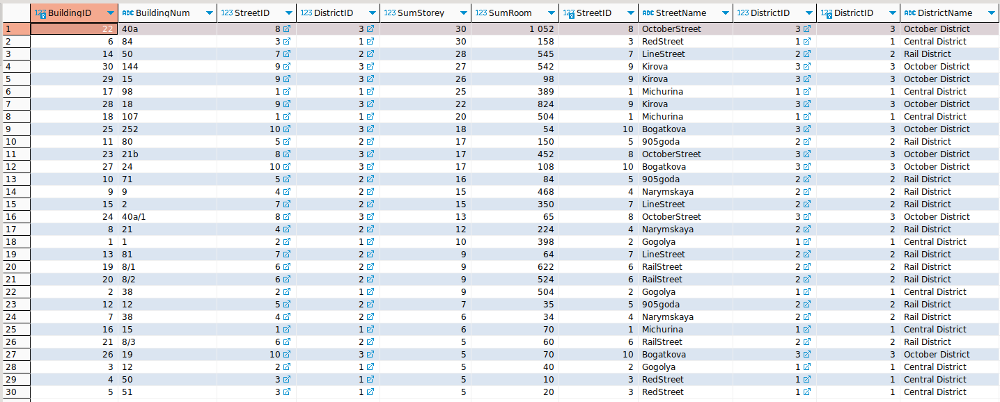

1. Создание и заполнение таблиц
Создание таблицы районов:
CREATE TABLE District (
DistrictID integer PRIMARY KEY AUTOINCREMENT,
DistrictName text NOT NULL
);
SELECT * FROM District d ;
Заполнение таблицы районов:
INSERT INTO District (DistrictName)
VALUES ('Central District'), ('Rail District'), ('October District');
SELECT * FROM District d ;
Создание таблицы улиц:
CREATE TABLE Street (
StreetID integer PRIMARY KEY AUTOINCREMENT,
StreetName text NOT NULL,
DistrictID integer NOT NULL,
FOREIGN KEY (DistrictID) REFERENCES District (DistrictID) ON UPDATE CASCADE
);
SELECT * FROM Street s ;
Включение зависимости для внешнего ключа. В SQLite3 необходимо включать проверку ограничения по внешним ключам при каждом подключении.
PRAGMA foreign_keys; /*проверка на включение 0-выключена, 1-включена */
PRAGMA foreign_keys = ON;
Тестовое заполнение на проверку связей:
INSERT INTO Street (StreetName, DistrictID)
VALUES ('Michurina', 10);
Заполнение таблицы улиц:
INSERT INTO Street (StreetName, DistrictID)
VALUES
('Michurina',(SELECT DistrictID FROM District WHERE DistrictName LIKE 'Cen%')),
('Gogolya',(SELECT DistrictID FROM District WHERE DistrictName LIKE 'Cen%')),
('RedStreet',(SELECT DistrictID FROM District WHERE DistrictName LIKE 'Cen%')),
('Narymskaya',(SELECT DistrictID FROM District WHERE DistrictName LIKE 'Ra%')),
('905goda',(SELECT DistrictID FROM District WHERE DistrictName LIKE 'Ra%')),
('RailStreet',(SELECT DistrictID FROM District WHERE DistrictName LIKE 'Ra%')),
('LineStreet',(SELECT DistrictID FROM District WHERE DistrictName LIKE 'Ra%')),
('OctoberStreet',(SELECT DistrictID FROM District WHERE DistrictName LIKE 'Oct%')),
('Kirova',(SELECT DistrictID FROM District WHERE DistrictName LIKE 'Oct%')),
('Bogatkova',(SELECT DistrictID FROM District WHERE DistrictName LIKE 'Oct%'));
SELECT * FROM Street s ;
SELECT COUNT(*) FROM Street s ;

Создание таблицы зданий:
CREATE TABLE Building (
BuildingID integer PRIMARY KEY AUTOINCREMENT,
BuildingNum text NOT NULL,
StreetID integer NOT NULL,
DistrictID integer NOT NULL,
SumStorey integer NOT NULL,
SumRoom integer NOT NULL,
FOREIGN KEY (StreetID) REFERENCES Street(StreetID) ON UPDATE CASCADE,
FOREIGN KEY (DistrictID) REFERENCES District(DistrictID) ON UPDATE CASCADE
);
SELECT * FROM Building b ;
Тестовое заполнение на проверку связей и пустого значения, далее заполнение таблицы зданий:
INSERT INTO Building (BuildingNum, StreetID, DistrictID, SumStorey, SumRoom)
VALUES ('1', 15, 10, 10);
INSERT INTO Building (BuildingNum, StreetID, DistrictID, SumStorey, SumRoom)
VALUES
('1', (SELECT StreetID FROM Street WHERE StreetName LIKE 'Gogol%'), (SELECT DistrictID FROM Street WHERE StreetName LIKE 'Gogo%'), 10, 398);
INSERT INTO Building (BuildingNum, StreetID, DistrictID, SumStorey, SumRoom)
VALUES
('38', (SELECT StreetID FROM Street WHERE StreetName LIKE 'Gogol%'), (SELECT DistrictID FROM Street WHERE StreetName LIKE 'Gogo%'), 9, 504),
('12', (SELECT StreetID FROM Street WHERE StreetName LIKE 'Gogol%'), (SELECT DistrictID FROM Street WHERE StreetName LIKE 'Gogo%'), 5, 40),
('50', (SELECT StreetID FROM Street WHERE StreetName LIKE 'Red%'), (SELECT DistrictID FROM Street WHERE StreetName LIKE 'Red%'), 5, 10),
('51', (SELECT StreetID FROM Street WHERE StreetName LIKE 'Red%'), (SELECT DistrictID FROM Street WHERE StreetName LIKE 'Red%'), 5, 20),
('84', (SELECT StreetID FROM Street WHERE StreetName LIKE 'Red%'), (SELECT DistrictID FROM Street WHERE StreetName LIKE 'Red%'), 30, 158),
('38', (SELECT StreetID FROM Street WHERE StreetName LIKE 'Nar%'), (SELECT DistrictID FROM Street WHERE StreetName LIKE 'Nar%'), 6, 34),
('21', (SELECT StreetID FROM Street WHERE StreetName LIKE 'Nar%'), (SELECT DistrictID FROM Street WHERE StreetName LIKE 'Nar%'), 12, 224),
('9', (SELECT StreetID FROM Street WHERE StreetName LIKE 'Nar%'), (SELECT DistrictID FROM Street WHERE StreetName LIKE 'Nar%'), 15, 468),
('71', (SELECT StreetID FROM Street WHERE StreetName LIKE '905%'), (SELECT DistrictID FROM Street WHERE StreetName LIKE '905%'), 16, 84),
('80', (SELECT StreetID FROM Street WHERE StreetName LIKE '905%'), (SELECT DistrictID FROM Street WHERE StreetName LIKE '905%'), 17, 150),
('12', (SELECT StreetID FROM Street WHERE StreetName LIKE '905%'), (SELECT DistrictID FROM Street WHERE StreetName LIKE '905%'), 7, 35),
('81', (SELECT StreetID FROM Street WHERE StreetName LIKE 'Lin%'), (SELECT DistrictID FROM Street WHERE StreetName LIKE 'Lin%'), 9, 64),
('50', (SELECT StreetID FROM Street WHERE StreetName LIKE 'Lin%'), (SELECT DistrictID FROM Street WHERE StreetName LIKE 'Lin%'), 28, 545),
('2', (SELECT StreetID FROM Street WHERE StreetName LIKE 'Lin%'), (SELECT DistrictID FROM Street WHERE StreetName LIKE 'Lin%'), 15, 350),
('15', (SELECT StreetID FROM Street WHERE StreetName LIKE 'Mi%'), (SELECT DistrictID FROM Street WHERE StreetName LIKE 'Mi%'), 6, 70),
('98', (SELECT StreetID FROM Street WHERE StreetName LIKE 'Mi%'), (SELECT DistrictID FROM Street WHERE StreetName LIKE 'Mi%'), 25, 389),
('107', (SELECT StreetID FROM Street WHERE StreetName LIKE 'Mi%'), (SELECT DistrictID FROM Street WHERE StreetName LIKE 'Mi%'), 20, 504),
('8/1', (SELECT StreetID FROM Street WHERE StreetName LIKE 'Rai%'), (SELECT DistrictID FROM Street WHERE StreetName LIKE 'Rail%'), 9, 622),
('8/2', (SELECT StreetID FROM Street WHERE StreetName LIKE 'Rai%'), (SELECT DistrictID FROM Street WHERE StreetName LIKE 'Rail%'), 9, 524),
('8/3', (SELECT StreetID FROM Street WHERE StreetName LIKE 'Rai%'), (SELECT DistrictID FROM Street WHERE StreetName LIKE 'Rail%'), 5, 60),
('40a', (SELECT StreetID FROM Street WHERE StreetName LIKE 'Oct%'), (SELECT DistrictID FROM Street WHERE StreetName LIKE 'Oct%'), 30, 1052),
('21b', (SELECT StreetID FROM Street WHERE StreetName LIKE 'Oct%'), (SELECT DistrictID FROM Street WHERE StreetName LIKE 'Oct%'), 17, 452),
('40a/1', (SELECT StreetID FROM Street WHERE StreetName LIKE 'Oct%'), (SELECT DistrictID FROM Street WHERE StreetName LIKE 'Oct%'), 13, 65),
('252', (SELECT StreetID FROM Street WHERE StreetName LIKE 'Bog%'), (SELECT DistrictID FROM Street WHERE StreetName LIKE 'Bog%'), 18, 54),
('19', (SELECT StreetID FROM Street WHERE StreetName LIKE 'Bog%'), ( DistrictID FROM Street WHERE StreetName LIKE 'Bog%'), 5, 70),
('24', (SELECT StreetID FROM Street WHERE StreetName LIKE 'Bog%'), (SELECT DistrictID FROM Street WHERE StreetName LIKE 'Bog%'), 17, 108),
('18', (SELECT StreetID FROM Street WHERE StreetName LIKE 'Kir%'), (SELECT DistrictID FROM Street WHERE StreetName LIKE 'Kir%'), 22, 824),
('15', (SELECT StreetID FROM Street WHERE StreetName LIKE 'Kir%'), (SELECT DistrictID FROM Street WHERE StreetName LIKE 'Kir%'), 26, 98),
('144', (SELECT StreetID FROM Street WHERE StreetName LIKE 'Kir%'), (SELECT DistrictID FROM Street WHERE StreetName LIKE 'Kir%'), 27, 542);
SELECT * FROM Building b ;
SELECT COUNT(*) FROM Building b ;
2. Запросы в БД
Запрос на список созданных таблиц:
SELECT name FROM sqlite_master WHERE type='table';
Таблица зданий с указанием наименовай улиц и районов через JOIN:
SELECT * FROM Building
JOIN Street ON Building.StreetID = Street.StreetID
JOIN District ON Building.DistrictID = District.DistrictID
ORDER BY SumStorey DESC, DistrictName DESC;

3 самых высоких здания отдельно по районам через JOIN 3-х таблиц:
SELECT * FROM Building
JOIN Street ON Building.StreetID = Street.StreetID
JOIN District ON Building.DistrictID = District.DistrictID
WHERE DistrictName LIKE 'Oct%' ORDER BY SumStorey DESC LIMIT 3;
SELECT * FROM Building
JOIN Street ON Building.StreetID = Street.StreetID
JOIN District ON Building.DistrictID = District.DistrictID
WHERE DistrictName LIKE 'Rail%' ORDER BY SumStorey DESC LIMIT 3;
SELECT * FROM Building
JOIN Street ON Building.StreetID = Street.StreetID
JOIN District ON Building.DistrictID = District.DistrictID
WHERE DistrictName LIKE 'Cen%' ORDER BY SumStorey DESC LIMIT 3;
3 самых высоких здания по районам в более читаемом формате через коррелирующий запрос:
SELECT BuildingID,
BuildingNum,
(SELECT StreetName FROM Street WHERE Street.StreetID = Building.StreetID) AS StreetName,
(SELECT DistrictName FROM District WHERE District.DistrictID = Building.DistrictID) AS DistrictName,
SumStorey,
SumRoom
FROM Building
WHERE DistrictName LIKE 'Oct%' ORDER BY SumStorey DESC LIMIT 3;
SELECT BuildingID,
BuildingNum,
(SELECT StreetName FROM Street WHERE Street.StreetID = Building.StreetID) AS StreetName,
(SELECT DistrictName FROM District WHERE District.DistrictID = Building.DistrictID) AS DistrictName,
SumStorey,
SumRoom
FROM Building
WHERE DistrictName LIKE 'Rai%' ORDER BY SumStorey DESC LIMIT 3;
SELECT BuildingID,
BuildingNum,
(SELECT StreetName FROM Street WHERE Street.StreetID = Building.StreetID) AS StreetName,
(SELECT DistrictName FROM District WHERE District.DistrictID = Building.DistrictID) AS DistrictName,
SumStorey,
SumRoom
FROM Building
WHERE DistrictName LIKE 'Cen%' ORDER BY SumStorey DESC LIMIT 3;
Неудачная попытка вывести 9 самых высоких зданий по районам в одной таблице:
SELECT * FROM Building
JOIN Street ON Building.StreetID = Street.StreetID
JOIN District ON Building.DistrictID = District.DistrictID
WHERE DistrictName LIKE 'Oct%' ORDER BY SumStorey DESC LIMIT 3,
AND DistrictName LIKE 'Cen%' ORDER BY SumStorey DESC LIMIT 3,
AND DistrictName LIKE 'Rail%' ORDER BY SumStorey DESC LIMIT 3;
Создание трех виртуальных таблиц с тремя максимально высокими зданиями по районам и объединение (UNION не работает, если перед ним стоит ORDER BY):
CREATE VIEW October_3_Max_Storey AS
SELECT BuildingID,
BuildingNum,
(SELECT StreetName FROM Street WHERE Street.StreetID = Building.StreetID) AS StreetName,
(SELECT DistrictName FROM District WHERE District.DistrictID = Building.DistrictID) AS DistrictName,
SumStorey,
SumRoom
FROM Building
WHERE DistrictName LIKE 'Oct%' ORDER BY SumStorey DESC LIMIT 3;
CREATE VIEW Rail_3_Max_Storey AS
SELECT BuildingID,
BuildingNum,
(SELECT StreetName FROM Street WHERE Street.StreetID = Building.StreetID) AS StreetName,
(SELECT DistrictName FROM District WHERE District.DistrictID = Building.DistrictID) AS DistrictName,
SumStorey,
SumRoom
FROM Building
WHERE DistrictName LIKE 'Rail%' ORDER BY SumStorey DESC LIMIT 3;
CREATE VIEW Cent_3_Max_Storey AS
SELECT BuildingID,
BuildingNum,
(SELECT StreetName FROM Street WHERE Street.StreetID = Building.StreetID) AS StreetName,
(SELECT DistrictName FROM District WHERE District.DistrictID = Building.DistrictID) AS DistrictName,
SumStorey,
SumRoom
FROM Building
WHERE DistrictName LIKE 'Cen%' ORDER BY SumStorey DESC LIMIT 3;
SELECT * FROM October_3_Max_Storey;
SELECT * FROM Rail_3_Max_Storey;
SELECT * FROM Cent_3_Max_Storey;
SELECT * FROM October_3_Max_Storey
UNION ALL
SELECT * FROM Rail_3_Max_Storey
UNION ALL
SELECT * FROM Cent_3_Max_Storey;